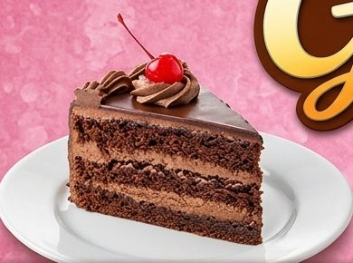
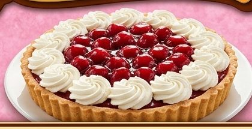
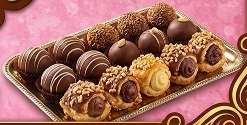

Conócenos
Más que postres, creamos momentos especiales.
Nuestra historia
Gustocci nació del amor por la repostería artesanal, hecha con dedicación, creatividad y mucho cariño.
Hoy preparamos tortas, queques, cupcakes y galletas decoradas para acompañar tus celebraciones en Oruro.
🎯
Misión
Elaborar repostería artesanal fresca y deliciosa que haga más especiales los momentos de nuestros clientes.
🌟
Visión
Ser la repostería preferida de Oruro por su calidad, su creatividad y su trato cercano.
💝
Valores
Cariño, calidad, creatividad y puntualidad en cada entrega.
Cuidado en cada preparación
Del ingrediente a la decoración, cuidamos cada paso.



📍
Dónde estamos
Oruro, Bolivia. Coordina tu entrega o recojo escribiéndonos por WhatsApp.
+591 70420780
gustocci@gmail.com